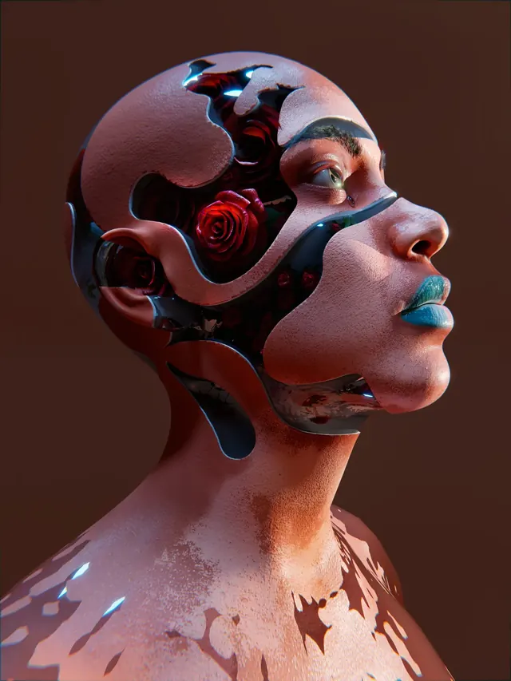
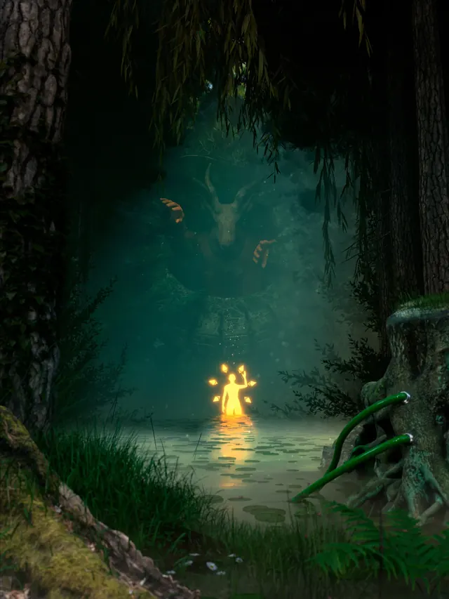
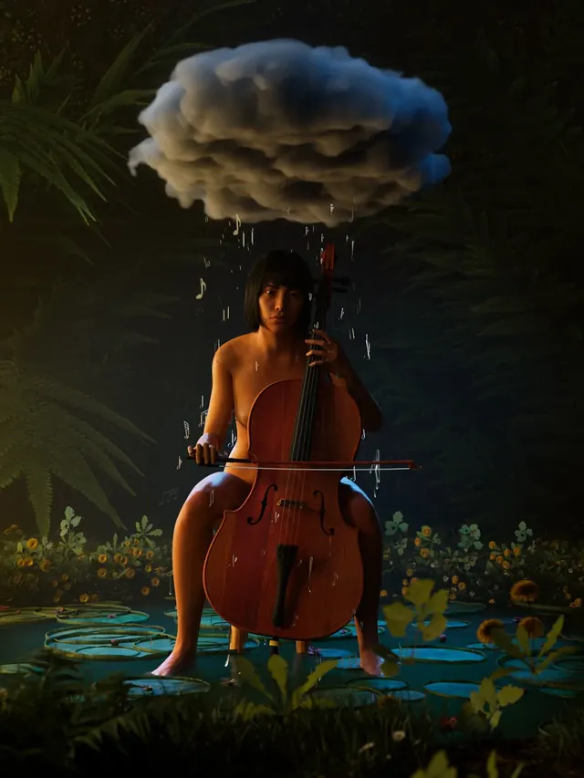
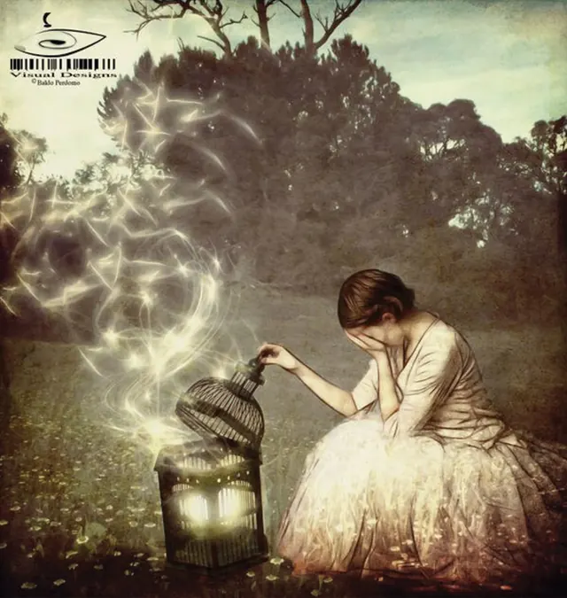
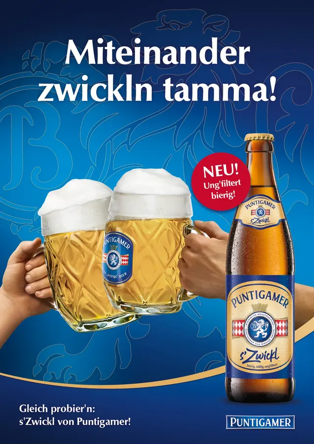

BALDO PERDOMO
/ CITY_MADE_IN_BLENDER
A Vienna modelled in Blender, rendered live in your browser.
> Baldo Perdomo García is a graphic designer, 3D artist and motion designer in Vienna. Invisible systems. Visible impact.
Motion.
Independent experiments
Personal motion studies, built frame by frame in After Effects with the sound designed to the same timeline. Not commissioned by these brands.
Independent experiments. Not commissioned by, affiliated with or endorsed by vorauerfriends or fonio. Names and logos belong to their owners.
Selected works.
3D · Branding · Campaigns
Experiments in 3D and campaigns for Austrian brands, from key visual to final render.
{kind=link}

Fragile Self{kind=link}

Worship{kind=link}

Preludio{kind=link}

Losing Hope{kind=link}

Puntigamer OMV{kind=link}
 Lotterien
Lotterien
 Botanical
Botanical
Built on my own.
Self-taught · shipped · no mockups
Since 2021 I have been on parental leave, caring for my son. I used the time to stop handing designs over and to build them myself: Kotlin, Jetpack Compose and the modern web stack.
- SplitEasyAndroid · Play Store
- Module 01E-learning · open
- MastAI product · 4 days
- FaroAndroid · in development
- HabitCheckAndroid
- Prism DodgeGodot 4
The architect of form.
3D · Motion · Brand identity
- > Recognition
- SuperRare Open Call Winner. Work exhibited in Times Square, New York and in Rome.
- > Industry
- Campaigns for Österreichische Lotterien, Puntigamer, Gösser and OMV through GGK MullenLowe Vienna.
Vienna, on foot.
Street photography


World · AI films.
ComfyUI · MiniMax H3
Short films generated locally in ComfyUI with MiniMax H3, independent work around World, the on-chain prediction market.
About me.
Vienna · from Spain
Graphic designer, 3D artist and motion specialist. I believe in systems over isolated pieces: visual languages that scale, breathe and last. Before: GGK MullenLowe, Securikett, Bosch.
Blender · Houdini · After Effects · Photoshop · Illustrator · InDesign · Unreal / ES · EN · DE
This Vienna was modelled in Blender for this site. Landmarks at real proportions, map distances at 60%. Rendered live with three.js.